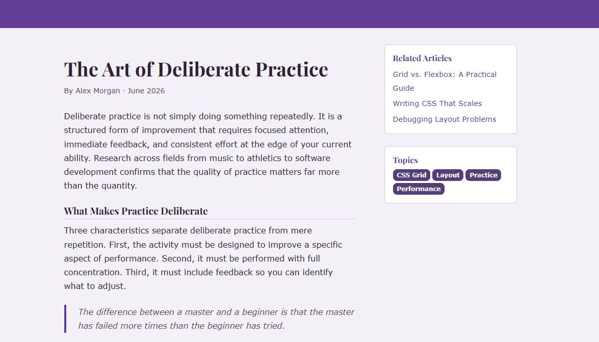
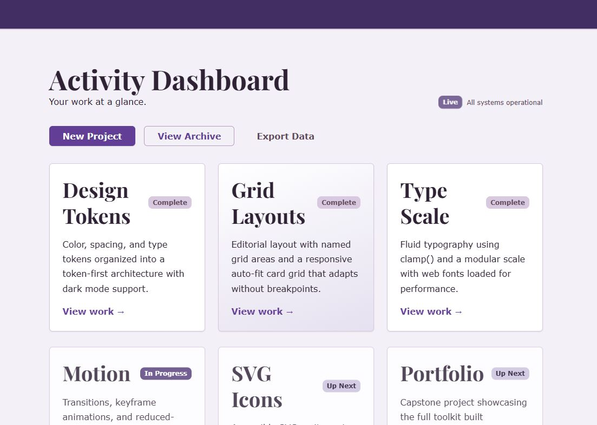
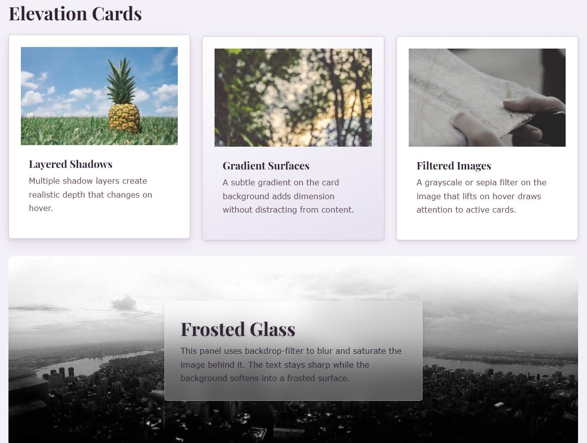

Featured Work
Three projects that best show what this semester was actually about: layout systems, purposeful motion, and visual effects built entirely with tokens.

Editorial Grid Layout
A magazine-style layout built with CSS Grid, no frameworks involved.
View project →
Meaningful Motion
Purposeful animation that fully respects prefers-reduced-motion.
View project →
Visual Effects Showcase
The hero, card, and glass-panel patterns this homepage reuses, in their original context.
View project →Coursework by Unit
Every assignment from the semester, organized under the theme it belongs to. Teaching-video demos are labeled.
Foundations and the Modern CSS Landscape
Where the site's design system starts: custom properties and native CSS nesting instead of a preprocessor.
Cascade Control, Architecture, and Tooling
The cascade layers, PostCSS build, and folder architecture that keep every page below in order.
Color, Theming, and Visual Effects
Light/dark theming with light-dark(), oklch color ramps, shadows, gradients, and blend modes.
Layout Mastery
Grid, subgrid, container queries, and sticky positioning — the layout techniques behind this page's responsive sections.
A magazine-style editorial grid built with CSS Grid.
Complete Unit 4 Part A Grid Layouts — Card GridA responsive auto-fit card grid with no media queries.
Complete Unit 4 Part A Aspect-ratio & Object-fit Demo Teaching videoKeeping media proportioned without layout shift.
Complete Unit 4 Part B Subgrid & Container Layouts — Container DemoA component that adapts to its container, not the viewport.
Complete Unit 4 Part B Subgrid & Container Layouts — Sticky DemoSection headers that stick, then get pushed off by the next one.
Complete Unit 4 Part B Masonry Demo Teaching videoA Pinterest-style masonry layout for the teaching video.
CompleteTypography, Print, and Forms
Fluid type scales, print stylesheets, and accessible forms — used directly in the résumé and contact pages below.
text-wrap, clamp(), and font-relative units in practice.
Complete Unit 5 Part B RésuméA print-ready résumé with a dedicated @media print stylesheet.
Complete Unit 5 Part B Contact FormAn accessible contact form with client-side validation states.
Complete Unit 5 Part B color-scheme Demo Teaching videoA deep dive into the color-scheme property for the teaching video.
CompleteMotion, SVG, and Portfolio Polish
Meaningful motion, scroll-driven animation, and the SVG icon system that powers the navigation and cards on this very page.
Purposeful animation that respects prefers-reduced-motion.
Complete Unit 6 Part A Scroll-Driven Animation Demo Teaching videoA scroll-linked progress bar and reveal animation using scroll().
Complete Unit 6 Part B Accessible SVG Icon SystemThe sprite-sheet icon system live in this page's nav and cards.
Complete Unit 6 Part B Pure CSS Icons Demo Teaching videoIcons drawn with pure CSS, no SVG or icon font, for the teaching video.
Complete